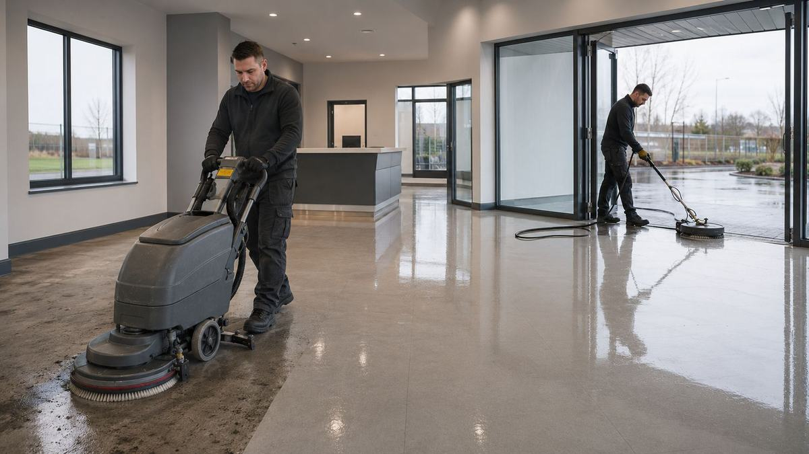

Home / Services
Commercial cleaning
Deep cleans, end-of-tenancy and industrial cleaning for commercial and residential property across Limerick and Kerry.
There is routine cleaning, and there is resetting a property
Deep cleans, post-construction cleans and end-of-tenancy cleans are the second kind - getting a property back to lettable, saleable or handover condition. That is what we are usually called in for.
For landlords, the void is the cost
The gap between tenancies is dead money. A thorough end-of-tenancy clean combined with whatever make-good repairs are needed gets a property back to market faster - and because we cover the trades too, the cleaning and the repairs can happen in one coordinated visit instead of three sequential ones.
Post-works cleaning is its own discipline
Construction dust gets everywhere and keeps reappearing for weeks if the clean is done once and done badly. Warehouses and industrial units need different equipment again.
How the job runs
In order, and in writing.
Walk it first
Scope the actual condition rather than quoting off a floor area.
Sequence with any repairs
If make-good work is needed, cleaning goes after it, not before.
Work top down
So nothing lands on what has already been done.
Specialist equipment where needed
Floor scrubbers, pressure washing, dust extraction.
Final inspection
Walked with you, so handover is not a negotiation.
Before you get quotes
What determines the price.
We do not publish figures, because a figure without a site visit is a guess. These are the variables that actually move the number - worth understanding whoever you end up using.
Condition versus size
Condition usually matters more than square metres.
Whether repairs are involved
Coordinated clean-and-repair is more efficient than separate visits.
Specialist requirements
Floor treatments, high-level access, industrial equipment.
One-off or contract
Ongoing contracts price differently to a single deep clean.
Access and hours
Out-of-hours access for occupied premises.
When you don't need us
If you have a regular cleaner keeping a premises in good order, you do not need us for routine work. Call us for the resets - end of tenancy, post-construction, or a property that has got beyond what routine cleaning can recover.
Questions
Straight answers.
Do you do end-of-tenancy cleans for landlords?
Yes, and because we also cover repairs and decoration, the make-good work can be coordinated in the same visit to shorten the void.
Do you offer ongoing contracts?
Yes, arranged around the premises and its operating hours.
Can you clean after building work?
Yes. Post-construction cleans including dust removal and floor treatment are routine.
Do you cover Kerry?
Yes, Limerick and Kerry.
Can you work outside opening hours?
Yes, and for occupied commercial premises that is usually preferable.
Often needed alongside
Where we work
Limerick and Kerry.
Based at the Old Creamery Enterprise Centre in Ardagh, Co. Limerick, working across the county and into Kerry.
Limerick City · Ardagh · Adare · Newcastle West · Rathkeale · Askeaton · Croom · Kilmallock · Abbeyfeale · Foynes · Patrickswell · Castleconnell · Caherconlish · Bruff · Dromcollogher · Pallaskenry · Glin · Shanagolden · Athea · Annacotty · Murroe · Cappamore · Tralee · Killarney · Listowel · Castleisland · Abbeydorney · Tarbert
Tell us what needs doing.
Free site visit, free assessment, itemised quote. No obligation either way.
Something urgent? Call - 24/7 emergency call-outs.